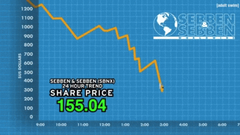
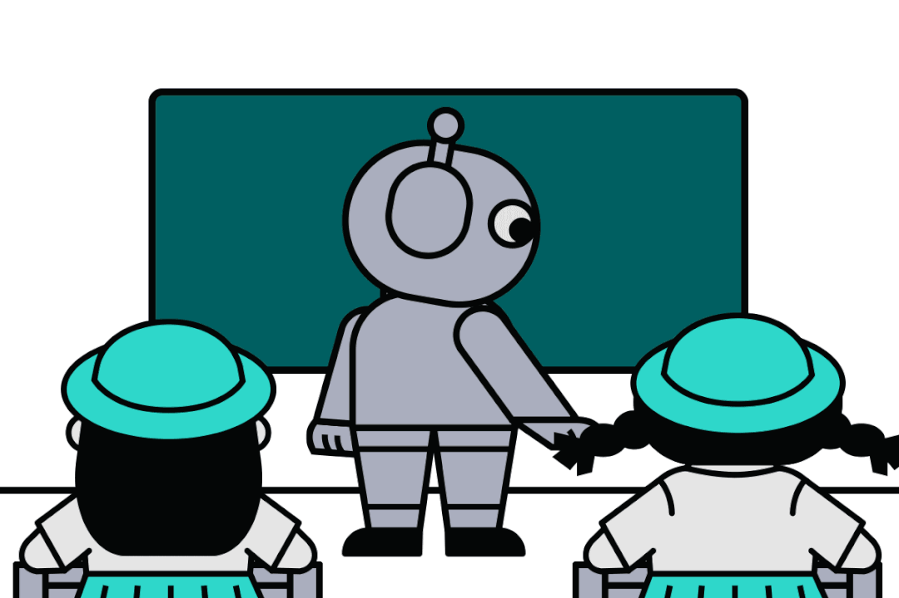
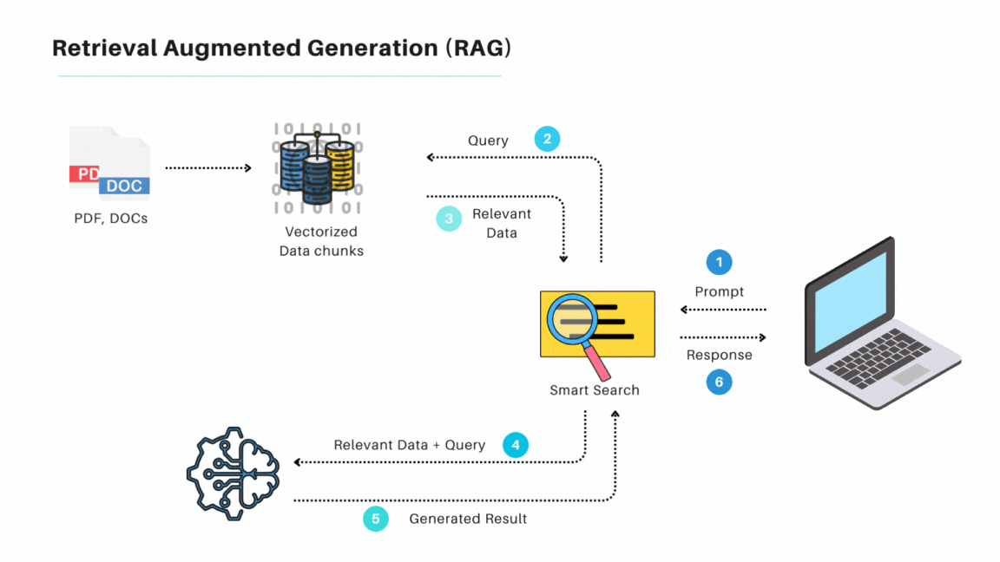
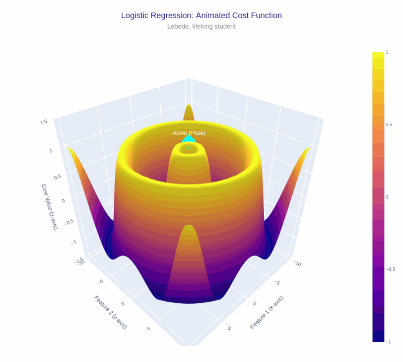

| Home | Projects | Skills | Education |
|
|
|  |
Aug'24 - Present Advisor: Prof. P. Das, HOD of CSE Dept, Academy of Technology Stokis is an AI/ML-based stock market prediction and sentiment analysis project, developed as final year project. The project combines advanced AI techniques with web technologies to predict stock prices and analyze market sentiment. The team consists of Ankit Paul, Arpan De, Hindol Banerjee, Mayukh Chakraborty and myself. The stock prediction model leverages machine learning algorithms such as Linear Regression, while sentiment analysis of market-related news is performed using a fine-tuned FinBERT model, tailored to understand financial texts. This combination of prediction and sentiment analysis provides a more comprehensive view of stock market trends. On the web development side, the frontend is built using React, offering a responsive and interactive user interface. The backend is powered by FastAPI, ensuring fast and scalable API interactions. The system presents users with stock price trends, sentiment analysis results, and basic financial insights. Though it's a basic project at its core, Stokis serves as a foundation to further enhance prediction accuracy and incorporate more advanced techniques in the future. Code |
Dec'2024 Developed an Advanced Authentication System that provides a secure and modular solution for user management. The system supports JWT-based authentication for secure user login, email-based verification using Nodemailer, and role-based access control (RBAC) for different levels of access within the application. The solution ensures scalability and flexibility, allowing for easy integration with various web and mobile applications. The project also included features like password hashing with bcrypt and the implementation of two-factor authentication (2FA) to enhance security. The backend was built using Node.js and Express, with user data stored in MongoDB, providing a robust and reliable authentication mechanism. Code |

|
Dec'2024 Developed a Netflix-like video streaming platform using the MERN stack (MongoDB, Express, React, Node.js). The system features a JWT-based authentication mechanism, allowing users to securely register, log in, and access a variety of video content. The platform supports responsive design, enabling seamless user experience across devices. Integrated video streaming capabilities, along with user-specific playlists and real-time content recommendations. The system’s backend is designed for scalability, handling high user traffic efficiently. The project was an in-depth exploration of both front-end and back-end technologies. Code |
Nov'24 - Dec'24 JetQuest was my first major project where I gained valuable experience in backend development. The project, focused on tour management, leverages a multi-layer map visualization using Mapbox API, allowing users to explore tour routes dynamically. The system incorporates features like user authentication, dynamic image uploads, and interactive map layers, all powered by advanced backend concepts. During this project, I had the opportunity to learn and implement key backend technologies such as Nodemailer for email-based user authentication and Multer for handling image uploads. I also used Parcel for bundling and optimizing static assets, streamlining the development process. The project was structured using the MVC (Model-View-Controller) architecture, enabling clean and maintainable code. While the system was not premium, it provided a comprehensive solution that incorporates advanced concepts like user management, image handling, and dynamic data visualization in a real-world context. Code |
 |
Jun'24 - Oct'24 Developed an AI-driven currency detection system using YOLOv8 and Vision Transformers (ViT). The system accurately identifies and classifies currency notes in various real-world scenarios, enhancing financial accessibility and automation. Participated in the HaRBInger-2024 Hackathon organized by the Reserve Bank of India (RBI), where we presented the project as an AI-powered solution for currency validation and fraud detection. Although our team was not selected, it was an incredibly interesting and valuable experience to work on a real-world problem within the financial sector. We were a team of five, led by Arya Chakraborty, with Saptarshi Bhattacharya, Abhirup Guhathakurta, Shreya Sen, and myself. The collaborative effort allowed us to refine our skills and approach to building impactful AI-driven solutions. Code |
 |
Jul'24 Developed a personalized English tutor application leveraging Llama 3.1 for natural language understanding and Deepgram for speech recognition. The system dynamically adapts to the learner’s progress, providing customized lessons, feedback, and interactive conversations. It offers a natural and intuitive learning experience, catering to both beginner and advanced learners. The AI-driven platform helps users improve their vocabulary, pronunciation, and conversational skills. The model ensures real-time interaction, where feedback is tailored to individual learning curves, resulting in an efficient and engaging learning process. Code |
 |
Jun'24 Developed a real-time web-page analysis tool using a Retrieval-Augmented Generation (RAG) pipeline. The project leverages Cohere for semantic search and FAISS for efficient similarity search, enabling real-time insights into any web page's content. The system provides detailed analysis for SEO, content structure, and user engagement metrics, assisting content creators and marketers. Worked on optimizing the backend architecture with Streamlit to ensure a smooth and interactive user experience. The application is designed to provide actionable insights from web page data, improving content quality and visibility. Code |
 |
Dec'23 - Jan'24 Developed QuirkyViz-ML-Chaos-Visualizer, an interactive web-based tool that visualizes the dynamics of machine learning models in chaotic environments. The platform integrates Matplotlib and Plotly for real-time graph plotting and data exploration. It allows users to experiment with various datasets and observe how machine learning algorithms behave in unpredictable or chaotic conditions. The project was aimed at enhancing understanding of the complexity and instability in machine learning models, especially in non-linear scenarios. Users can interact with the visualizations to gain insights into model performance, identify potential areas of improvement, and understand the nuances of model behavior in complex datasets. Code |